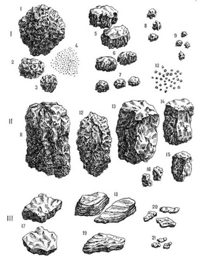
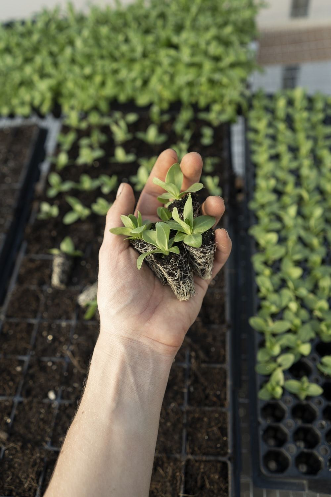
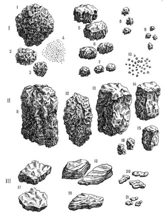
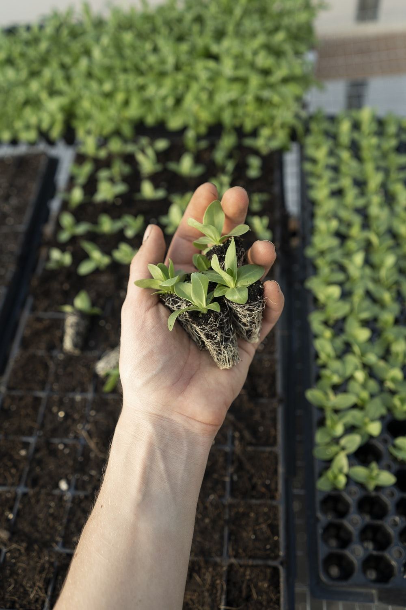

О почве
Морфология почв
Физика почв
Биология почв
Химия почв
Почва — это особое природное тело, образующееся на поверхности Земли, в результате взаимодействия живой (органической) и неживой (неорганической) природы. Важнейшим свойством почвы, отличающим её от горных пород, является плодородие.
Сумма внешних признаков, которые являются результатом процессов формирования и поэтому отражают происхождение почв, историю их развития, их физические и химические свойства.
Физические свойства и процессы в почвах. Особое внимание уделяется движению воды, переносу питательных веществ, теплопроводности, транспортировке газа. Кроме того, прочность почвы, ее механика, уплотнение, несущая способность, набухание и усадка, макропоры и т. д.
Почва — это среда обитания множества организмов. Существа, обитающие в почве, называются педобионтами. Наименьшими из них являются бактерии, водоросли, грибки и одноклеточные организмы, обитающие в почвенных водах.
Изучение химических основ почвообразования и плодородия почв, путем исследования состава, свойств почв и протекающих в почвах процессов на ионно-молекулярном и коллоидном уровнях.